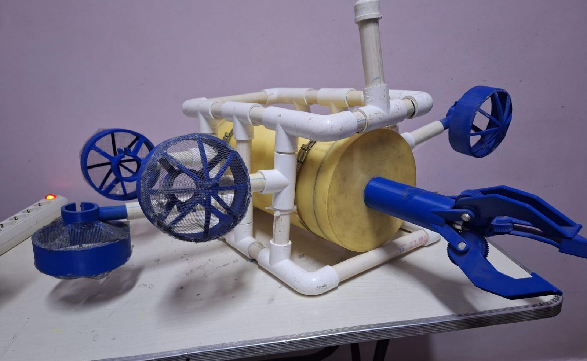
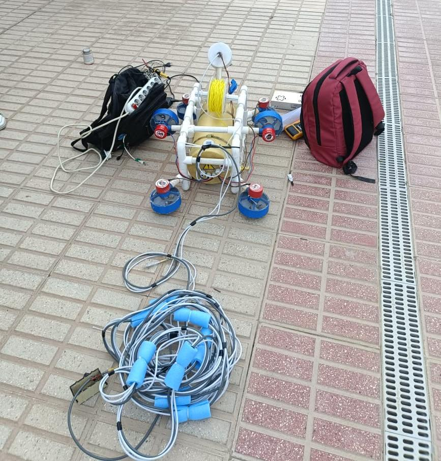
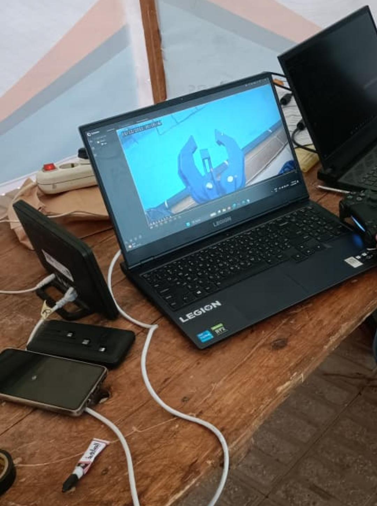
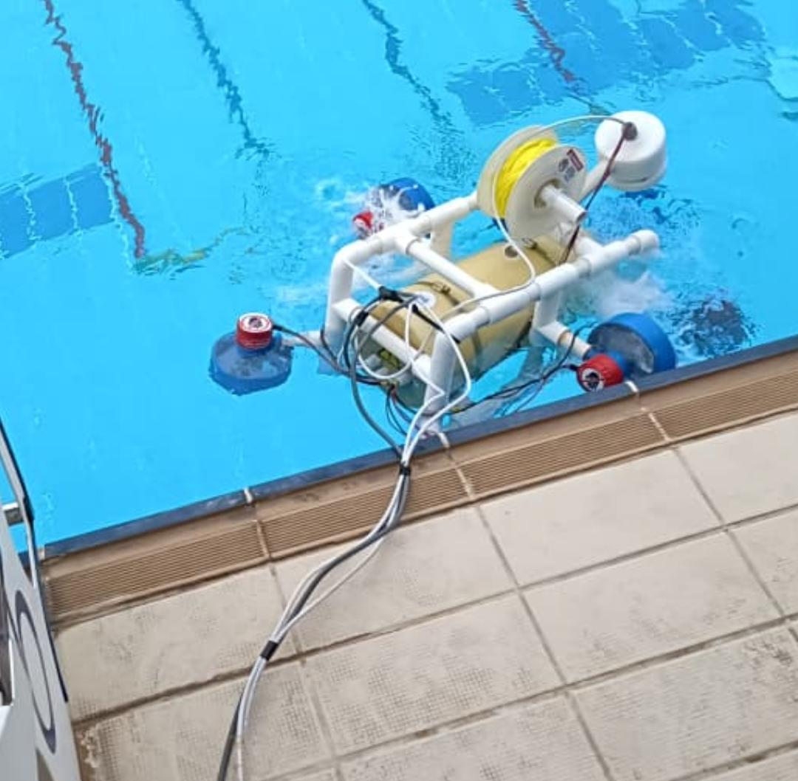
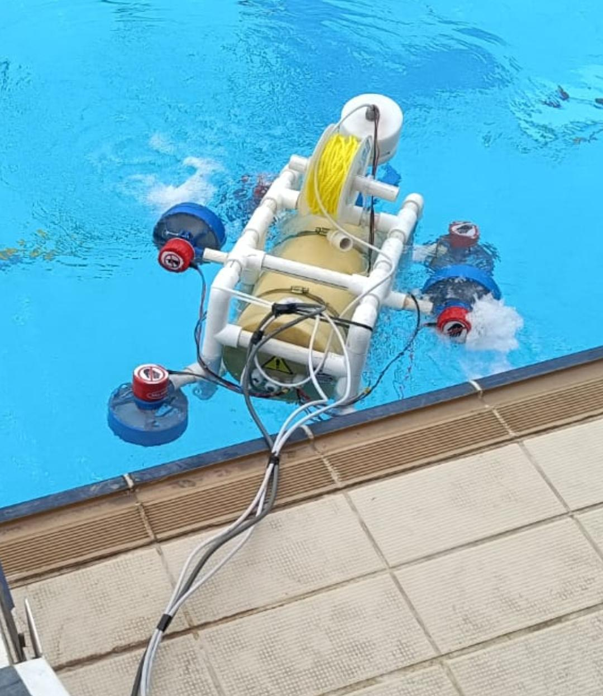
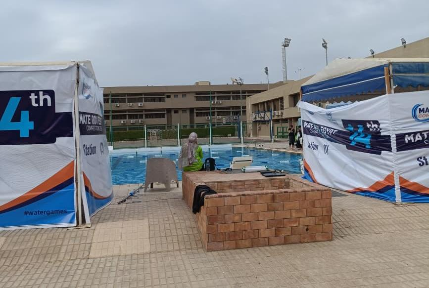

AI Lead work on underwater crab detection and 3D reconstruction for the team's autonomous ROV.
Upload an image and the model will detect in real time. Running on a Hugging Face Space — first load may take 20–30 seconds if the Space has been idle.
Fine-tuned a crab detection model for the MATE ROV Competition, supporting underwater object detection as part of the team's autonomous vision pipeline:
The implementation combines a fine-tuned computer vision model with an interactive deployment pipeline:
Photos of the team's ROV in action — hardware build, field tests, and competition runs. Shared across both the Crab Detection and 3D Reconstruction projects above.





